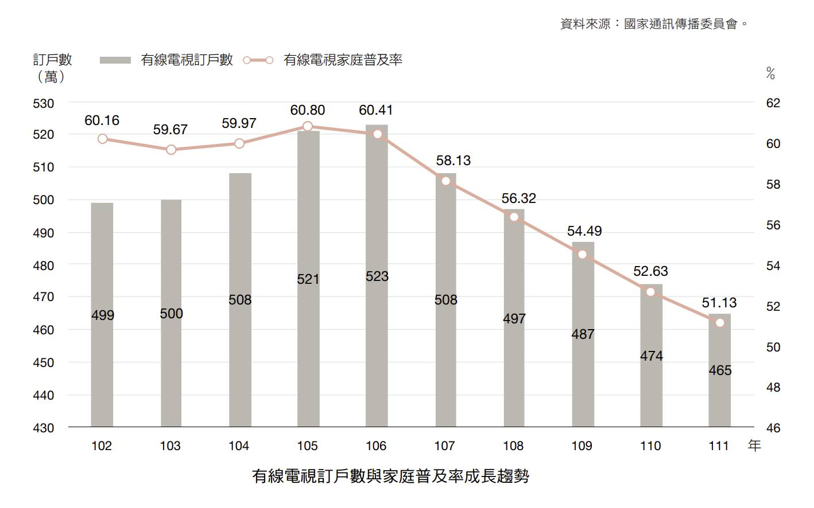

台灣的有線電視剪線潮，如今已不再只是市場預測，而是各家電視台每天都要面對的營運現實。
根據國家通訊傳播委員會（NCC）統計，全台有線電視普及率僅剩五成。當客廳的觀眾不斷流失，首當其衝的，便是過去極度仰賴即時性、大眾化收視的體育電視台。

作為台灣少數手握大型賽事轉播權的定頻有線電視頻道，緯來體育台在過去數十年間，建立在穩固的有線電視體制內。然而，當收視主體發生世代更迭，跨國串流平台（OTT）與高額資本加入版權爭奪戰，老牌體育台無法再僅靠單一的電視螢幕生存，而必須在資本與社群之間，摸索出一條「電視與串流並重」的雙軌路徑。
消失的客廳觀眾：三十歲以下的收視斷層
要釐清傳統體育台的轉型困境，必須先解構有線電視原有的獲利結構。在過去的黃金時代，電視台的生存主要仰賴兩大經濟支柱：一是系統業者支付給頻道商的「有線電視版權費」，這項穩定的挹注往往能撐起頻道商高達六成的收入基本盤；二是憑藉大眾普及率吸引品牌主投入的「廣告收入」。這套運作數十年的商業模式之所以能夠成立，完全建立在一個共同的前提上——大眾習慣「回到電視前觀看大螢幕」的集體收視慣性。
「三十歲以下的族群，幾乎不把有線電視當作他們收視選項了。」
—— 文大培，緯來體育台台長
中高齡觀眾拿起遙控器、轉到固定頻道被動收看，是一種行之有年的生活慣性，也是過去大眾廣告能精準投放的基石。相反地，30歲以下的數位原生世代高度依賴智慧型手機與平板等行動裝置，收視行為更傾向於「隨選隨看」與「主動檢索」。他們的注意力零散地分布在各大社群、實況與短影音中，不再願意被固定的節目時間綁死。
當守在電視大螢幕前的觀眾結構加速高齡化，版權費與廣告收入隨之萎縮，迫使老牌電視台必須跨出傳統客廳，尋求兼顧「有線電視」與「數位客群」的雙軌生存策略。
全球資本衝擊下，有線電視的營運策略
在營收基本盤因剪線潮而縮減的同時，體育台最重要的生產成本——賽事轉播權利金——也在跨國資本競爭下演變為全球性的通貨膨脹。
過去台灣的轉播版權主要是在地電視台相互角逐，價格符合本地市場的規模；然而當跨國巨頭加入戰局，版權費隨即水漲船高。文大培台長舉例，當熱門賽事版權費高達一千萬美金，本地電視台難以負荷時，但這對 Netflix 而言卻僅是拍一集劇集的成本。而運動組織面對這種資本實力，商業邏輯非常直接，誰給的資金多就與誰合作。
面對高昂的版權成本，本地電視台之所以難以在傳統線性電視上解套，是由於運動賽事與一般戲劇節目不同，它具備極強的「即時 Live 限制」與「排他性」。戲劇可靠重播分攤成本，但運動賽事一旦結果揭曉，觀眾完整收看重播的興趣便雪崩式下滑，頂多瀏覽精華剪輯（highlight）。若非獨家授權，收視率與廣告分潤一旦遭無線或新聞台瓜分，收益也會被嚴重分散。因此，「拿獨家」是固守營收的必要手段。
在「國際版權費高漲」與「Live 無法重播獲利」的重重困難下，本地電視台能做的只剩下最精準的資源精算。但因受限於線性媒體在同一時間只能播放一個節目的物理限制，緯來在旗下僅有兩個主要體育頻道，當賽事撞期播不完時，就必須做出妥協。例如，將統一獅的轉播權再授權給其他平台。此舉其實並非是為了賺取中間差價，而是為了精算資源，讓各項職棒賽事能盡可能鎖定在有線電視71到76頻道的運動區塊內。守住這個區塊的豐富度，藉此維持觀眾前後按遙控器的收視慣性，不讓觀眾從此區段流失，這是在地頻道在電視端守住營運基本盤的最後防線。
有線電視 vs. 數位平台
關於外界常認為數位平台因畫質較佳而會對電視台造成衝擊的問題，文大培台長指出雖然有系統台（例如：凱擘）推出 4K 機上盒，但市面上多數拍攝訊號仍以 HD 1080p 為主流，對一般觀眾的收視需求已經是綽綽有餘。因此真正影響電視台競爭力的其實並非技術上的畫質，而是「頻寬服務的費用」，如果有線電視能夠調降頻寬服務費用，才是電視台能跟新媒體競爭的本錢。
談到數位平台的付費趨勢，台長也以 YouTube 推出 Premium 會員為例，說明「免費的到最後都會變付費」的市場定律，這是一種培養人類收視習慣的商業模式——當觀眾習慣了某種便利，每個月固定的扣款便成為自然，這也正是服務價值體現的時刻。
破除線性限制：新媒體 App 成為多角化賽事的解方
面對 Netflix、Disney+ 等國際巨頭的夾擊，緯來電視台未來的策略是尋求合作，而非閉門造車，期盼未來能與電視或機上盒系統直接合作，讓觀眾在電視介面上就能直接點選、甚至購買緯來的內容，然而背後龐大的技術建置與內容開發成本，對國內中型規模的電視台而言確實是一大考驗。
「我們所有的東西都要另外建置，所以我們必須 Step by Step（循序漸進）來做，目標是逐步建置出一個對觀眾、對我們都相對滿意的新媒體 App 出來。」
—— 文大培，緯來體育台台長
台長強調緯來不打算將其定義為所謂的 OTT 串流平台，而是一個能精準服務球迷的專屬應用程式。傳統有線電視最大的痛點在於「線性傳播」——同一個頻道、同一個時間只能播一場比賽，但是在新媒體上就可以同時轉播好幾場比賽，觀眾也可以隨時切換不同賽事進行收看。
像是以中華職棒六隊的賽事轉播為例，雖然轉播球迷最多的球隊可以使收視率提升，但相對的其轉播版權費用也是最貴的，從成本效益來看，甚至反而可能是賠錢最多的項目。因此緯來透過與其他媒體（例如：DAZN）靈活調配轉播權，平衡經營綜效，而未來的 App 則能讓這些賽事應用更加自主。
兩者並重、精準分流：電視頻道與網路平台齊頭並進
因此對於未來的經營重心會選擇固守於傳統的電視頻道，又或者是會傾斜至新媒體？文大培台長表示以上皆非，他強調「兩者不可偏廢」，有線電視擁有穩定的版權與系統費用收入，且服務著特定年齡層的受眾；而 App 則是展現靈活性、滿足與電視不同需求之年輕族群的利器。
從線性電視的枷鎖中解放，緯來電視台似乎選擇了一條較為務實、以觀眾需求為核心的數位轉型之路，不盲目追求燒錢的國際巨頭模式，而是除了持續努力經營原本的電視轉播之外，同時也循序漸進地開發線上 App，這不只是緯來電視台跨足新媒體的重要里程碑，更是為台灣體育轉播產業開創全新的獲利與互動模式。